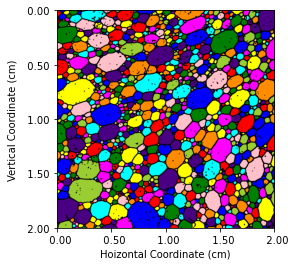

The ad wizards at Popsee Cola are interested in creating the perfect snapshot of their new soda creation: Popsee Techno. The gimmick here is that the soda bubbles are designed to be different colors.
A glass of Popsee is poured into a glass, and the ad wizards take a picture of the soda head from the side of the glass. Here’s a snapshot of the foam:

This is quite a disordered foam! Relatively small bubbles seem much more common, for instance. To make improvements to the picture aesthetics, the ad wizards at Popsee want to be able to quantify what the foam looks like. Similar to the sample dataset for the stained glass window, the Popsee dataset gives the following information regarding bubbles:
A copy of this year’s dataset (in .csv format) can be downloaded here
You can load the dataset by clicking on “Import Dataset –>” in the top right pane in RStudio.
The following questions are of interest to Popsee. Don’t sweat it if you can’t answer all of these questions in the allotted time. Just focus on the easier ones to start off and see how far you can get. Better to answer a few precisely than to answer all of them poorly.
\[\\[1in]\]
Easier questions
How many bubbles are in the image?
What is the mean and variance of the bubble perimeters?
On average, how many neighbors does a bubble have?
Create a frequency plot for the bubble degrees (number of neighbors for each bubble)? Take a look at the mode of this plot. How does this differ from your answer in the previous question?
What’s the largest area bubble in the picture? What is its coordinates and area? How much bigger is it compared to the average bubble area? How many sides does it have? Does this bubble also have the most sides?
What is the average bubble size on the top half of the image? What about the bottom half? Can you give a statistical statement comparing average bubble sizes? 7.What percentage of bubbles are ``lonely”, meaning having at most four neighbors? What’s the average area of a lonely bubble?
Trickier plotting questions
Make a scatter plot that has for the \(x\) axis the number of neighbors, and \(y\) value of the average perimeter for cells with \(n\) numbers. If possible, make a horizontal line on the graph with a \(y\) value of the average cell perimeter. Find the number of neighbors a cell should have to have mean perimeter closest to that of the entire dataset?
Give a histogram of the cell areas. It should look quite terrible. Can you provide an appropriate scaling to make the histogram look more readable?
What’s the relation between perimeter and area? In a graph of number of sides vs. average cell perimeter, is there some kind of a pattern? Can you give a function which approximates this relation?
An even trickier modeling question
##Solutions